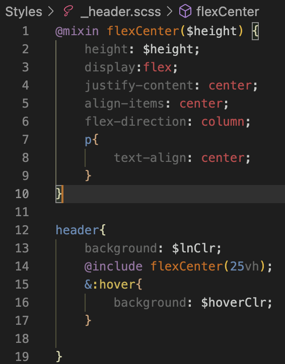

What is Sass?
Sass is a CSS extension that makes styling and organizing html easy!
Getting Started
To get started with Sass on VSCode, download this extension:
Now that we have the extension, its time to create a sass file.
First create a folder inside your project to store .css and .scss files. I call mine "styles". Now create a file called style.scss inside the new folder. This is how we create sass files.
Inside this .scss file we can write normal CSS code, as well as the special Sass code. To get it to work, we need to compile this file into a CSS file by pressing this button:
Don't forget to add a reference to the .css stylesheet in your html file.
The Basics
One of the most important things we can do in Sass is define variables. Variables are defined using '$' followed by the variable name. Variables can take on any kind of css data, and can be applied to css by replacing values with the variable name. Sass can also handle simple calculations.
CSS files can object get disorganized when it comes to adding designs to specific elements within classes. Sass helps with this by allowing the user to make changes like this inside of the class design.
Normally, changing the paragraphs in a body would be in a separate container, further down the page. Sass allows us to keep changes to containers inside that container in css, making it much easier to navigate to specific elements.
Importing and Extending
Sass is very good with organization. One way to demonstrate this is with imports. With Sass, you can put .scss code in a separate file, and import it into the main Sass file to keep it decluttered. On this webpage, I imported my header.
To begin with importing, create a separate .scss file in the styles folder. The name of this file MUST start with '_', this is how Sass reads it as an importing file. Now start writing with CSS or Sass
When you are ready, at the top of your main Sass file write '@import './filename''. *Do not include the '_' at the start of the actual filename.

You can also inherit values from one design to another using '@extend'. Using extensions will copy the exact same design from one thing to another. If you want to change something from the extension, you can override design values by writing them after the extension.
Mixins
Mixins are my favorite thing in Sass. A mixin is a way to apply similar design values to multiple elements, similar to extensions.
A Mixin is defined by writing '@mixin mixinName(){}', and just like that you can add designs into the mixin.
To apply a mixin to something, write '@include' followed by the mixin name and parentheses. Now a class or div will inherit whatever properties are in the mixin.

One cool thing about mixins is their use of parameters. Parameters are defined in the parentheses after the mixin name, and can be used like variables when designing the mixin, to change specifics about a class.
Conclusion
After using all of that Sass, this is how my final stylesheet looks. So clean!